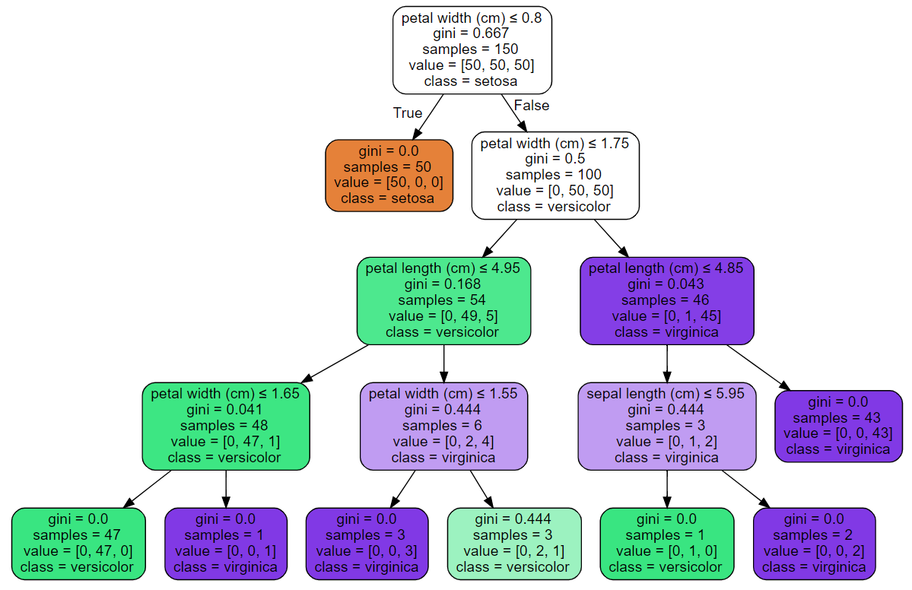

Decision Trees
(for beginner)Decision tree is a simple idea used in Machine learning, Statistic and Data mining. It is very easy to interpret and understand. As the name suggests, it helps us in making decisions, from simple to complex problems, provided data or information is given. Decision trees are supervised learning models used for both classification and regression tasks (CART) in machine learning. In this blog, we will discuss on how decison trees are used in machine learning classification tasks, which are illustrated better using examples. In the first example, we will try to understand how decision trees work and how they are used in making machine learning models.In example #2, Iris data is used to show the implementation of a decision tree in Python. Decision trees have an upside down tree-like structure starting from root to leaf. First, we will try to understand how decision trees are used in classification (categorize using a given set of data). We have to train a model such that, given an input data the model should predict the classifictaion(category) of input. Lets try to understand this with a simple example.
| Day | Outlook | Temperature | Humidity | Wind | Play? |
|---|---|---|---|---|---|
| 1 | Cloudy | Hot | High | Weak | Yes |
| 2 | Cloudy | Mild | High | Strong | Yes |
| 3 | Cloudy | Hot | Normal | Weak | Yes |
| 4 | Sunny | Hot | High | Weak | No |
| 5 | Sunny | Mild | Normal | Strong | Yes |
| 6 | Sunny | Hot | High | Strong | No |
| 7 | Rainy | Mild | High | Strong | No |
| 8 | Rainy | Cool | Normal | Strong | No |
| 9 | Rainy | Mild | High | Weak | Yes |
| 10 | Rainy | Mild | High | Weak | Yes |
Table 1: 10 days data on weather
Fig 1. Decision tree of weather data
The above table gives data on 10 days of weather
which helps us decide
if it is a good time to play or not. It has 4 variables or features which helps us decide on the same.
The first feature, (variable) ‘outlook’ takes 3 distinct features, the second feature, ‘temperature’
takes 3 distinct values, the third, ‘humidity’ and the fourth, ‘wind’, takes 2 distinct values.
The ML task here is to take input from us on the outlook, temperature, humidity and wind speed of a new day .
Using this information, the model we made should predict if it is a good day to play or not.
The table is represented in a simple decision tree which helps us to make a decision. The top node of the
tree is called the root node, which is also the most important feature or variable in the table. Other
nodes of the decision tree are called internal nodes. At each node, there is a test statement or question
that we ask (e.g. Is the outlook cloudy?). Each branch denotes a decision rule and at the very bottom of
the tree there is a leaf, where we arrive at a decision; in this case whether to play or not.
Choosing a feature or variable to split the data at each node is decided by Information gain or Gini impurity.
Information gain
Information Gain is a measure of how much information is given by each feature to make a decision.
The feature or variable used in the root node is the one which has the highest information gain, at each
node Information gain must be calculated to decide which feature to use for splitting.
To measure Information Gain, we need to know about Entropy.
The splitting stops when the Entropy (or Gini impurity) becomes zero or when there are no more data points to
proceed.
If the Entropy at leaf is zero, it is called a Pure node. The tree can be allowed to be grown till it reaches a pure node which is called as a
greedy tree because it sometimes leads to overfitting.
Consider the above example. If Entropy of the whole dataset should be calculated, then the value of k is 2, since we have only two possible outcomes (play or not play) or only two possible classifications ( Binary classification). and P(Yi) are the corresponding probabilities. Below are the steps on how to calculate Information Gain using Entropy.
Step-1: Calculate Entropy on the whole dataset (D), using our example above [Refer table 1]. We have 6 data points with outcome 'play'(yes) and 4 with outcome 'not to play' (No). Y is the class labels has values 'yes' and 'no'.
Step-2: If Outlook variable or feature to be used at root node is used to split the dataset, the information gain should be calculated as follows. Information Gain (Y given Outlook) is equal to Entropy on data set D subtracted by weighted child entropy (Conditional Entropy) on data set D1(after splitting D using Outlook feature)
Fig 2. Calculation of child entropy on split data
Step-3: Repeat the step 2 for all other features; wind, temperature and humidity. The feature with the highest IG will be the used at the root node. In this scenario, it is for Outlook. At every split, follow step 2 and step 3 on the split data.
Using Scikit-learn library in python we can directly apply Decision trees
on classification tasks. It internally calculates
Gini impurity, Entropy and Information gain.
Once decison tree is constructed from raw data set, a simple model can be built using if-else statements.
Note: This is a simple data set with only 10 Data points. The more the data points, more relatable
and accurate the results will be. Try the model below by selectling the options and clicking on submit button.
Simple model using if-else statements.
Iris Dataset
In example 2, we will discuss how to implement a decision tree model using Python for Iris dataset. Since this is a classification task, given the input variables, the model has to predict what type of Iris flower it belongs to. It is not easy to differentiate these flowers just by looking at them as they look alike (See the figure below). A machine learning model can be trained on data collected, such that if the features (input variables) of the flower are given, the type (class) of the flower is to be predicted (output). Iris data set has 4 input variables or features Sepal length, Sepal width, Petal length and Petal width and the output labels are Iris setosa, Iris versicolor and Iris virginica.

Fig 3. Iris flowers: Setosa, Versicolor, Virginica
The steps to train Iris dataset using decision trees and visualize the tree is given below. Note: The code is done on jupyter notebook using python.
Step-1: Import necessary libraries. There are two ways to access Iris data: it can be directly loaded from the Sklearn library or accessed by downloading the csv file from Kaggle. The data set has 150 different data points with 5 columns. The dataset can be downloaded from here. Store the input features in a variable ‘x’ and the corresponding class in variable ‘y’. If data is downloaded from Kaggle, use Pandas to read the csv file.
Step-2: Display the first 5 rows of the data. Our input features are real values and output class is categorical. Hence this is a ‘classification task’. The data is ‘balanced’ because for each class, we have the same number of data points.

Step-3:In step one, we imported a decision tree classifier. The classifier is defined such that, max depth = 4, starting at the root node to the leaf. The tree is only allowed 0 to 4 depth (to avoid overfitting). After that, fit the data (x,y) to the model (clf).
Step-4:Here Graphviz library is used to visualize the decision tree. You can check out other methods to visualize the tree and how to use Graphviz here.

A model can be easily built using the decision tree above
just by using if-else statments.
Note: For both models given in this blog, if-else conditions are written in Java script.
Model to identify Iris flowers
Enter only numbers
Conclusion
Decision tree is a simple, yet very ‘interpretable’ model. While it is not limited to simple datasets like the ‘Iris dataset’, it can also be used for complex ones. To know how to use a decision tree for a regression task, click
here. There are
ensemble
Decision trees models which work well for very large data, like
Random forest and
Gradient Boosting
Decision Trees (GBDT) To know how to implement it in Python using Sklearn, click the following links.
1. Random forest implementation
2. (GBDT) implementation